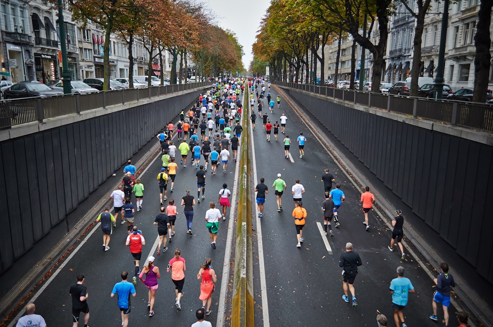

速くなくていい。
今日はゆっくりでも、途中で歩いても。
自分のペースが、いちばんいいペース。
CLOCK OUT. LACE UP.
日常が終わる、その先へ。
速さも、肩書きも、ここでは置いていこう。
いつもの街を、ちょっと違う自分で走る。
ALL PACES. ALL PEOPLE. ALWAYS.
[ 01 — THE RUNS ]
街の明かり。川沿いの風。
今夜の気分で、コースを選ぼう。
どのランも、はじめの一歩は大歓迎。
THE MIDWEEK RESET
川沿いの風で、一日をリセット。会話が続くくらいのペースで走り、最後はコーヒーでひと息。
毎週水曜 · リバーサイドのコーヒースタンド
コース・開催内容はコンセプト上の設定です。
[ 02 — OUR PACE ]
記録より、記憶に残るランを。
今日はゆっくりでも、途中で歩いても。
自分のペースが、いちばんいいペース。
必要なのは、走る靴と少しの好奇心。
「はじめまして」の先に、いつもの仲間がいる。
コーヒーを飲んで、たわいない話をして。
また来週、と言える夜を増やそう。

DIFFERENT STORIES. SAME STREETS.[ 03 — YOUR PEOPLE ]
仕事終わりの自分に、小さな寄り道を。
いい夜は、きっと一緒につくれる。
BEFORE YOU LACE UP
はじめての夜に、気になること。
もちろん。短い距離をゆっくり楽しむ「PARK SIDE」も用意しています。速さを競わず、おしゃべりできるペースを大切にするクラブ、というコンセプトです。
動きやすい服、履き慣れたランニングシューズ、飲み物が基本。このサイトは架空のクラブのデモなので、実際の集合場所や開催案内はありません。
無料のコミュニティランを想定しています。「一緒に走る」からランパス作成を体験できますが、デモのため実際の予約や申込みにはなりません。入力した内容も外部へ送信・保存しません。